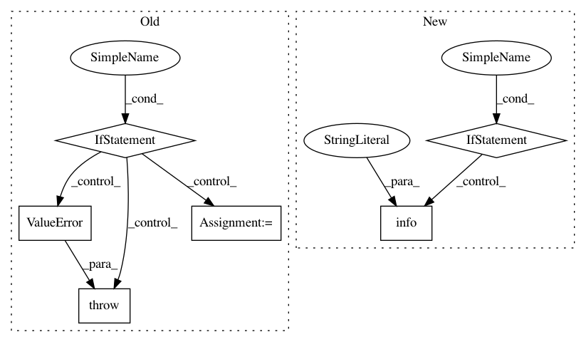

edb300280cd7854bb58e023d01ac24160bf6d98d,neurosynth/analysis/cluster.py,Clusterer,__init__,#Clusterer#Any#Any#Any#Any#Any#Any#Any#Any#Any#Any#Any#Any#,22
Before Change
self._set_clustering_algorithm(algorithm, **kwargs)
if isinstance(dataset, Dataset):
self.dataset = dataset
if global_mask is None:
global_mask = dataset.masker
if features is not None:
data = self.dataset.get_ids_by_features(features, threshold=feature_threshold,
get_image_data=True)
else:
data = self.dataset.get_image_data()
// if min_studies_per_voxel is not None:
// logger.info("Thresholding voxels based on number of studies.")
// sum_vox = data.sum(1)
// // Save the indices for later reconstruction
// active_vox = np.where(sum_vox > min_studies_per_voxel)[0]
// n_active_vox = active_vox.shape[0]
// if min_voxels_per_study is not None:
// logger.info("Thresholding studies based on number of voxels.")
// sum_studies = data.sum(0)
// active_studies = np.where(sum_studies > min_voxels_per_study)[0]
// n_active_studies = active_studies.shape[0]
// if min_studies_per_voxel is not None:
// logger.info("Selecting voxels with more than %d studies." % min_studies_per_voxel)
// data = data[active_vox, :]
// if min_voxels_per_study is not None:
// logger.info("Selecting studies with more than %d voxels." % min_voxels_per_study)
// data = data[:, active_studies]
self.data = data
else:
self.data = dataset
if global_mask is None:
raise ValueError("If dataset is a numpy array, a valid global_mask (filename, " +
"Mask instance, or nibabel image) must be passed.")
if not isinstance(global_mask, Masker):
global_mask = Masker(global_mask)
self.masker = global_mask
After Change
else:
data = self.dataset.get_image_data()
if min_studies_per_voxel is not None:
logger.info("Thresholding voxels based on number of studies.")
sum_vox = data.sum(1)
// Save the indices for later reconstruction
active_vox = sum_vox > min_studies_per_voxel
// n_active_vox = active_vox.shape[0]
av = self.masker.unmask(active_vox, output="vector")
self.masker.add(av)
// if min_voxels_per_study is not None:
// logger.info("Thresholding studies based on number of voxels.")
// sum_studies = data.sum(0)
// active_studies = np.where(sum_studies > min_voxels_per_study)[0]
// n_active_studies = active_studies.shape[0]
// if min_studies_per_voxel is not None:
// logger.info("Selecting voxels with more than %d studies." % min_studies_per_voxel)
// data = data[active_vox, :]
// if min_voxels_per_study is not None:
// logger.info("Selecting studies with more than %d voxels." % min_voxels_per_study)
// data = data[:, active_studies]
self.data = data
if distance_mask is not None:
self.masker.add(distance_mask)
In pattern: SUPERPATTERN
Frequency: 3
Non-data size: 6
Instances
Project Name: neurosynth/neurosynth
Commit Name: edb300280cd7854bb58e023d01ac24160bf6d98d
Time: 2014-11-07
Author: tyarkoni@gmail.com
File Name: neurosynth/analysis/cluster.py
Class Name: Clusterer
Method Name: __init__
Project Name: google/deepvariant
Commit Name: 7ed8c6bbcfb2dc0da9b1011ba21d12791239de79
Time: 2019-10-21
Author: gunjanbaid@google.com
File Name: deepvariant/postprocess_variants.py
Class Name:
Method Name: main
Project Name: biolab/orange3
Commit Name: 976f9ea013348f6885114f0dae092e03dd0d1022
Time: 2018-08-02
Author: rafael@irgolic.com
File Name: Orange/canvas/document/schemeedit.py
Class Name: SchemeEditWidget
Method Name: __nodeInsert